01 · Placeholder
What it exposed Dark navy and gold attracted the wrong audience. Mostly men at pop-up events, not the women the brand was built for.

Crescent Stables · Product Design
Crescent Stables is a women-led equestrian experiences brand for adult beginners. I redesigned its digital experience to reduce uncertainty, build trust, and help women feel that the space was meant for them before they ever arrived at the barn.
A space that was made for you.
Skip to solutionContext
It is the evolution of one product through three stages of understanding.
Most redesign case studies show two screens and a conclusion. Crescent Stables needed a harder story. A placeholder that signaled the wrong audience. A first pass that solved structure but not feeling. A second pass that finally earned the brand's emotional promise.
The interesting part is not the final screen. It is what each version revealed that the previous one could not yet see.
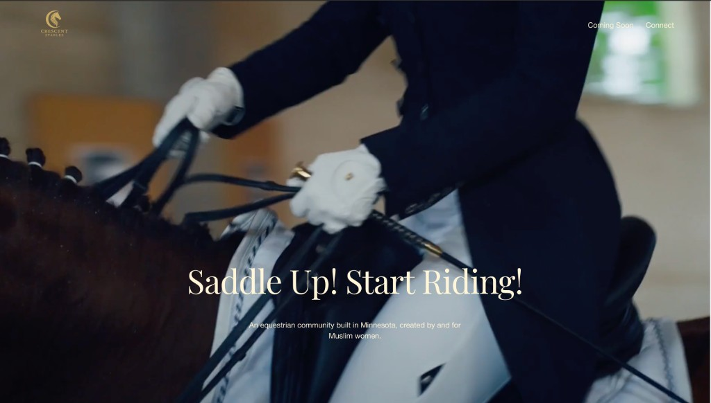
The evolution
Placeholder established the gap. Version 1 built the foundation. Version 2 deepened emotional precision. None of them were failures. Each was incomplete judgment, refined.
01 · Placeholder
What it exposed Dark navy and gold attracted the wrong audience. Mostly men at pop-up events, not the women the brand was built for.
02 · Version 1
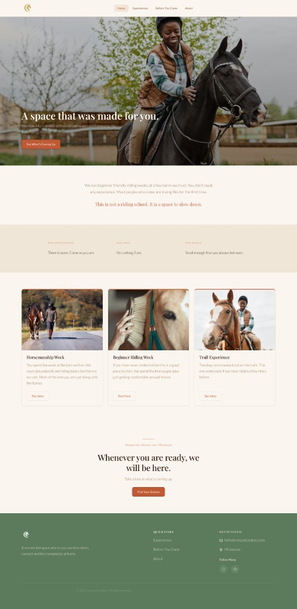
What it solved Hierarchy, IA, reassurance copy, and audience-centered photography. The UX finally worked. It still read like a capable template.
03 · Version 2
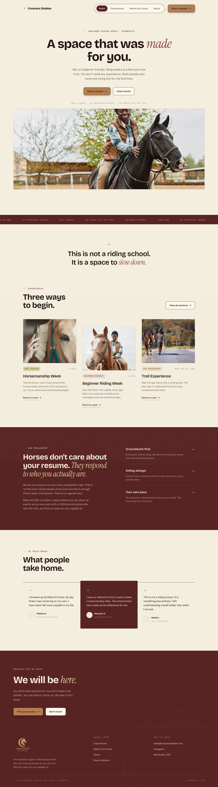
What it deepened Editorial calm, named audience, softer language, and emotional sequencing across every page. The experience finally felt like a space to belong.
The iteration between versions is the real story. What follows is how research, psychology, and two design passes built the experience that shipped.
Over six weeks, I led discovery research, UX strategy, information architecture, visual design, copywriting, branding, and front-end implementation. I delivered a responsive prototype user-tested with first-time riders, and a production website handed off to the client.
View the prototypeCrescent Stables is a women-led equestrian experiences brand in Minnesota, built for adult beginners who feel excluded from traditional riding spaces. The design could not be welcoming in a general sense. It had to be specifically welcoming to the women with the most reason to hesitate.
Research
I spoke with approximately 10 women to validate whether the emotional barriers I suspected were real. I asked about their perceptions of riding, whether they had ever considered trying it, and what would make them feel safe enough to take a first step.
Fear of looking inexperienced was the most consistent barrier. Not lack of interest.
Not information. Not a list of sessions and prices. A feeling that this place is for someone like her. That someone thought about her specifically when they built this. The site needed to answer three questions in order: Is this for someone like me? Is it safe and structured? What do I do to get started?
I structured the entire redesign around Kahneman's System 1 and System 2 framework. An anxious first-time visitor is operating almost entirely in System 1. She feels before she thinks. Every design decision had to serve what she feels in the first three seconds before her rational mind engages.

System 1 vs System 2. Every design decision mapped to the emotional state it was designed to serve.
Anchoring shaped the hero. The opening headline sets the emotional frame before any information is processed. Everything the visitor reads afterward is interpreted through that first impression.
Loss aversion shaped the session cards. Showing spots remaining creates urgency without pressure copy. Losing a spot feels worse than gaining one feels good. WYSIATI shaped the Before You Come page. Anxious users fill information gaps with worst-case assumptions, so the page was designed to fill every possible gap proactively.
Cognitive ease shaped the visual design. Text contrast corrections, generous line height, calm hierarchy, and short paragraphs reduce cognitive load before the user consciously notices any of it.
The final site has four pages: Home, Experiences, Before You Come, and About. Two naming decisions are worth noting.
The Safety page was renamed Before You Come. That shift moves the label from functional to experiential. It signals preparation and welcome rather than liability and rules. Contact was removed from the navigation entirely and merged into the bottom of the About page. This places the inquiry moment at the end of the trust-building journey rather than in competition with it.
Four pages. Every naming decision made with the nervous beginner in mind, not how a barn organizes its business.
Three rounds of wireframes in Figma before any visual design. Round one established basic page structure and content hierarchy. Round two refined spacing, card layouts, and CTA placement. Round three used Figma AI to pressure-test layout assumptions as a tool to accelerate iteration, not to replace design thinking.
The wireframes locked in a consistent set of decisions across every page: large headlines at the top, CTAs placed after reassurance content rather than before it, card-based program layouts, consistent spacing to signal calm.
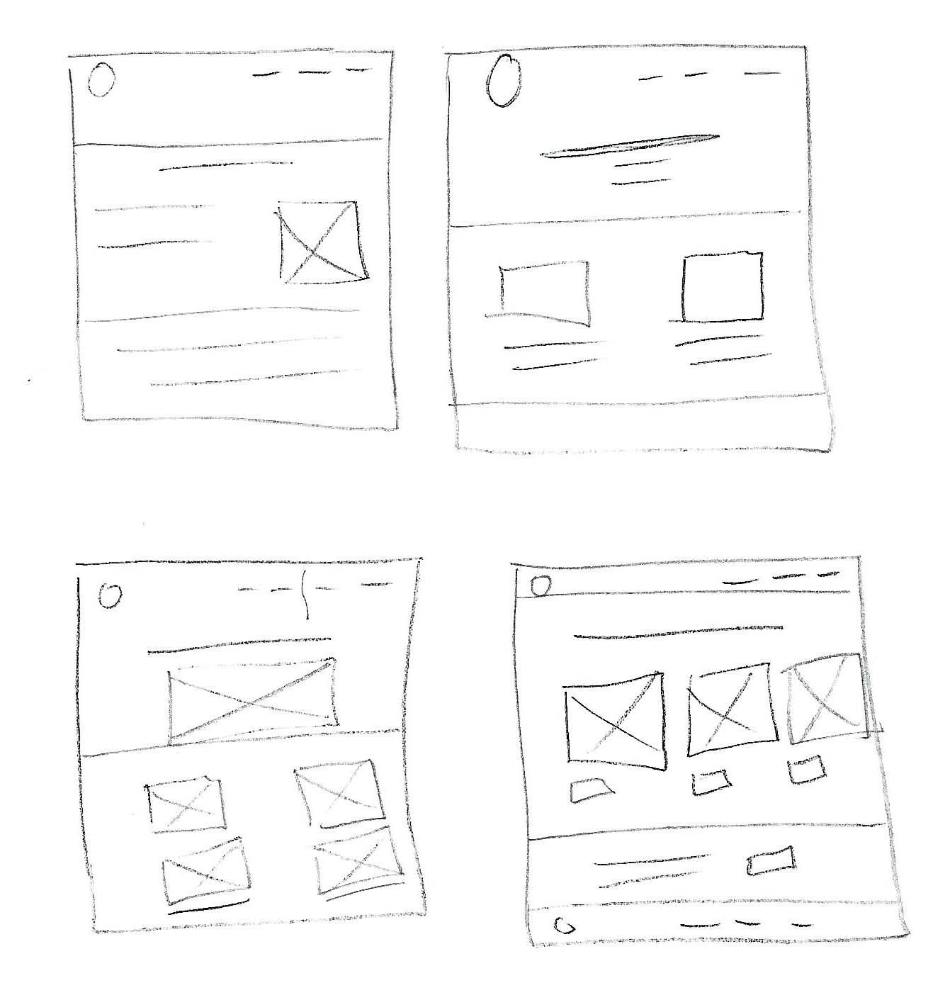
Round 1. Hand-drawn sketches to explore structure before committing to anything digital.
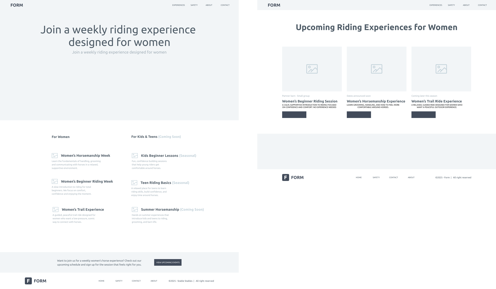
Round 2. Lo-fi digital layout. Content hierarchy locked in before any visual design.
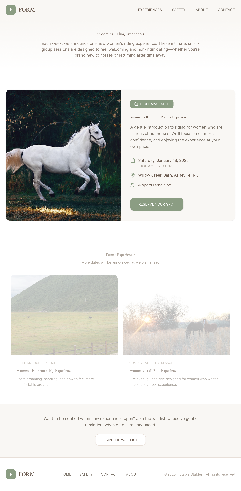
Round 3. Styled wireframes. Typography, spacing, and card layouts refined before final build.
The visual direction is warm and unhurried. Generous white space, strong typography hierarchy, card-based layouts, and a restrained palette of warm cream, terracotta, and sage green. Pull quote treatments appear at emotional peak moments on each page.

Three decisions, each made intentionally. Naming, reassurance, and scarcity. All working before the user consciously notices.
Copywriting was treated as a design discipline with explicit constraints. No generic phrasing. No filler. No formal tone. Every sentence either reassures the visitor or moves her forward. These foundations shaped Version 1 and became the raw material Version 2 refined.
| Original copy | Rewritten copy |
|---|---|
| "Join us for a session" | "Whenever you are ready, we will be here." |
| "Safety information" | "Before You Come" |
| "Contact us" | Removed from nav, merged into About page |
| Generic facility photos | Women of color and women in hijab in casual riding contexts |
Photography was shifted from facility shots to human-centered connection imagery. The images selected show women of color and women in hijab in casual, non-competitive riding contexts. This was a UX decision, not a visual one.
The inclusion approach was attraction-based. The goal was to make the target audience feel so seen and centered that the space clearly belongs to them. Without policy language that could feel defensive or performative.
Formal competition context. Sends a signal of expertise before the user reads a single word.
Appealing but impersonal. No human presence, no one to identify with.
Authentic, but not inviting. Activates uncertainty rather than curiosity.
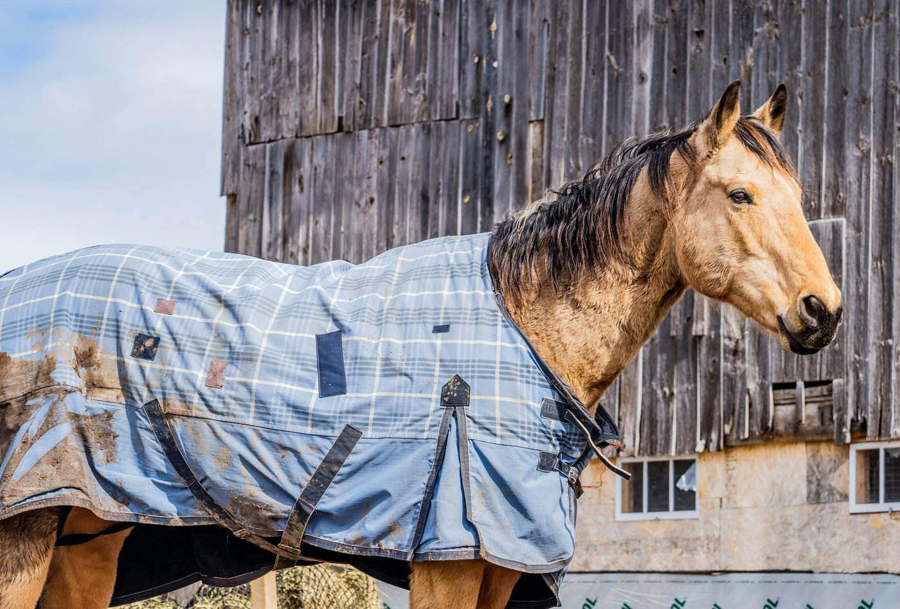
Moody and insider. Signals a world with its own codes that you need to already know.
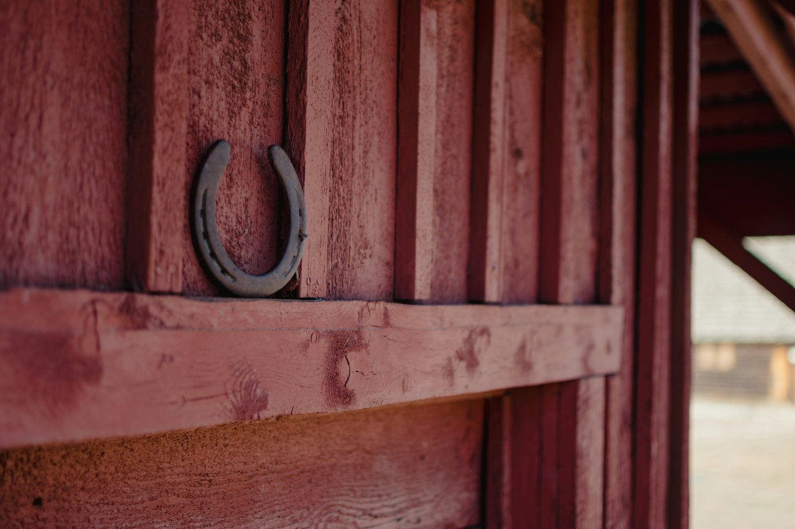
Beautiful light, empty frame. No person to identify with, no answer to: is this for me?
Every photo sends a signal before the brain engages the text. The original images signaled: this is a serious equestrian world and you need to already belong here.
The redesign centers women who look like the actual audience. Casual clothes. Real moments. The inclusion work happens before a word is read. This is the WYSIATI principle applied visually: if someone does not see themselves, they will not imagine themselves in the experience.
Photography direction was locked in Version 1 and refined in Version 2. The final hero image, a Black woman on horseback in a puffer vest and jeans, appears later in this case study, after the full design evolution.
From strategy to screens
The emotional logic had to come first. What follows is not one redesign. It is three stages of thinking, each building on what the last one got right.
Version 1 was a successful milestone. It solved the problems the original placeholder could not: clear information architecture, behavioral psychology mapped to page structure, reassurance-first copy, and photography that centered the actual audience.
It answered the three questions in order. Is this for someone like me? Is it safe and structured? What do I do to get started? The site finally worked as a UX system.
After client review and my own reflection, something still felt off. Version 1 had solved organization. The experience still read like a capable website template rather than a space someone could emotionally belong to.
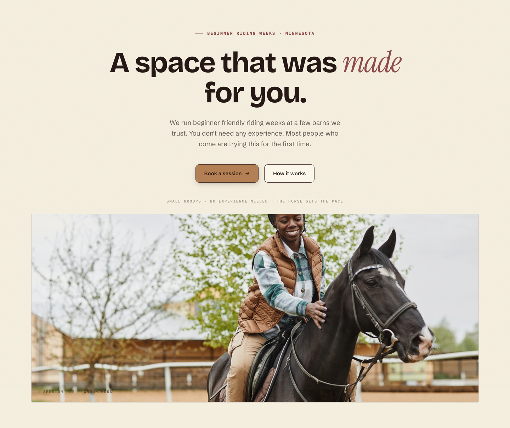
Version 1 solved many usability problems. It did not fully solve the emotional problem. The experience was welcoming in a general sense. It did not yet feel specifically welcoming to the women who had the most reason to hesitate.
I did not treat this as a failure. I treated it as incomplete judgment. The first solution had earned its place. The second pass was about deepening what the first one had only implied.
Good design is rarely finished on the first pass. The question is whether you can see what your own work is still communicating, and have the discipline to revisit it.
Version 2 shifted the experience from generally welcoming to specifically welcoming. It named the audience instead of implying them. It redesigned Before You Come around emotional reassurance, not just practical information. It softened language throughout, improved pacing and hierarchy, and made every page answer a different emotional question.
These were UX decisions. Not a visual refresh for its own sake.
Each version is a different layer of judgment. What it solved. What it still wasn't saying. Why another pass was necessary.
Stage 01 · Original placeholder
What it solved Nothing, intentionally. It was a temporary site while the brand found its footing.
What it wasn't communicating That this was a women-led space for beginners. The dark navy and gold palette signaled luxury and expertise. A velvet rope, not a door. At pop-up events, the people approaching were mostly men. The visual language was attracting the wrong audience entirely.
Why another iteration happened The brand needed a site that answered emotional questions before functional ones. Design is not neutral. Every visual choice either includes someone or excludes them.
Stage 02 · Version 1
What it solved Information architecture built around how a nervous beginner thinks. Reassurance-first copy. Photography centered on women of color and women in hijab. Behavioral psychology mapped to every page. A four-page structure that built trust in sequence.
What it still wasn't communicating Emotional belonging. Version 1 felt slightly generic. Too expected, too website-like. It had the right UX logic but not yet the editorial calm of a space someone could imagine themselves inside.
Why another iteration happened Solving hierarchy is not the same as solving feeling. Version 1 created the foundation. Version 2 had to deepen the emotional experience.
Stage 03 · Version 2
What it solved Every page now answers a distinct emotional question. Copy is softer and more specific. Before You Come became a reassurance experience, not an information dump. Contact became a conversation at the end of trust, not a competing nav item. The whole experience reads as editorial, not templated.
What it communicates now This is a space to belong. Not a riding school. The visitor feels named, not implied. The pace is calm enough to breathe.
What shipped Version 2 became the final deployed prototype and the production Squarespace handoff.
Version 2 was not a visual reskin. It changed how users feel at each step of the journey. It shifted the underlying frame of every interaction.
Each shift is a UX decision. The visitor does not just see different screens. She feels differently about whether this place was built for her.
Version 2 was not a single moment of inspiration. It was weeks of small, deliberate refinements. Each one tested against the question: does this make a nervous beginner feel more capable, or more overwhelmed?
Color exploration
Moved from a palette that felt template-adjacent to one with editorial warmth. Burgundy, dusty rose, sand, and cream. Each tone chosen to feel calm, not decorative.
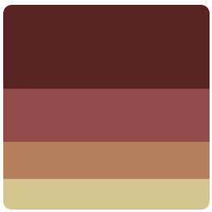
Typography refinement
Tightened the relationship between serif display and sans-serif body. Italic emphasis reserved for emotional peak moments, not decoration. Line height and paragraph rhythm adjusted for cognitive ease.
Copy refinement
Every sentence audited for pressure, filler, and insider language. "Join us for a session" became "Whenever you are ready, we will be here." The tone shifted from invitation-as-obligation to invitation-as-permission.
Spacing and pacing
Increased vertical rhythm between sections. Reduced visual density on session cards. Each page given more room to breathe. The calm is structural, not just aesthetic.
Image direction
Shifted from facility documentation to human connection. Women in casual clothes, real moments, non-competitive contexts. The hero image had to answer "is this for me?" before a word was read.
Interaction refinement
Created a genuine low-pressure contact path. Removed Contact from navigation. Added a "Not ready yet?" email capture. Every interaction designed to reduce commitment anxiety, not increase conversion pressure.
Version 2 · The payoff
These are not instructions. They are the decisions I would point to if someone asked what Version 2 actually improved, and why each one is a product judgment, not a visual preference.
From capable layout to editorial first impression
From session listing to low-pressure discovery
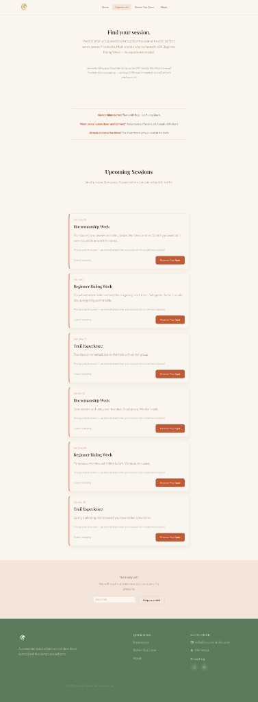
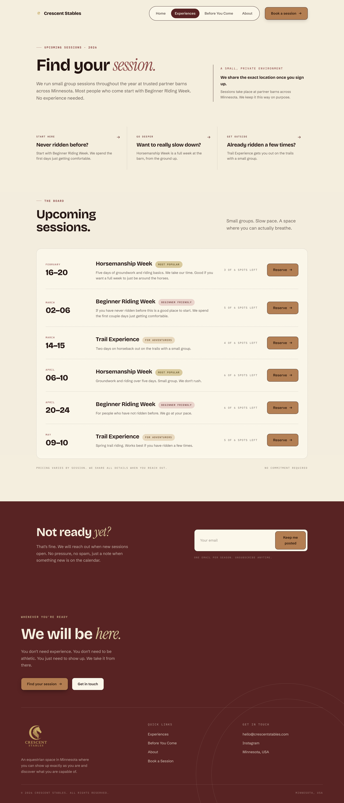
From practical checklist to emotional reassurance
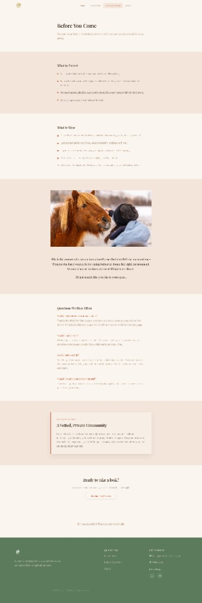
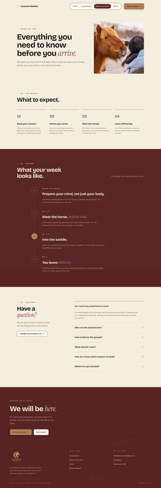
From brand page to trust-building conversation
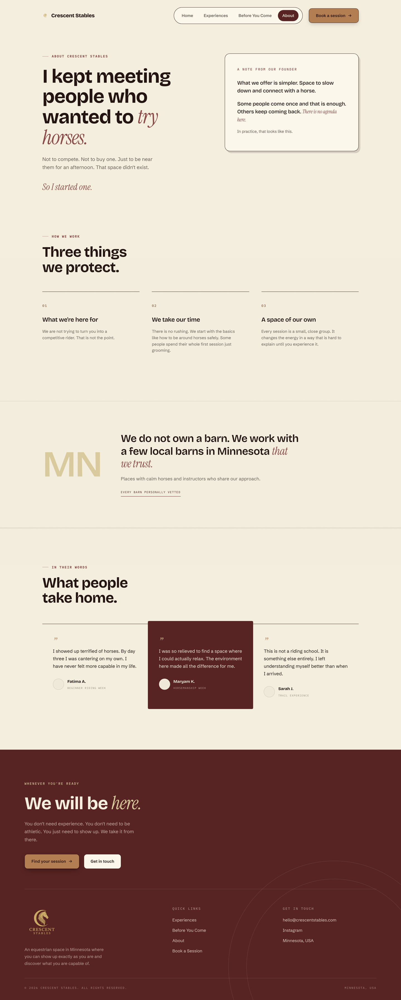
A deployed Netlify prototype and a production Squarespace site handed off to the client. The prototype is publicly accessible at crescent-stables.netlify.app.
The Netlify build was user-tested with two first-generation adult beginners before handoff. Both testers said the same thing: it felt like it was written for them.
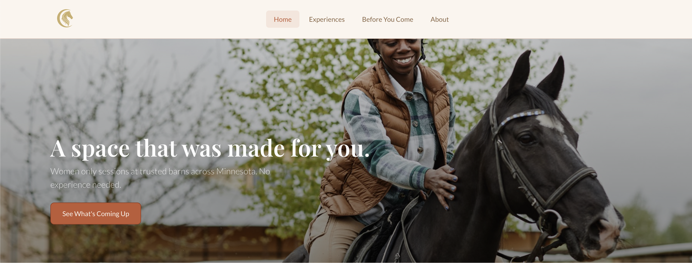
Home. Leads with belonging before anything else. Three short phrases below the hero spell out the pace, the group, and the expectation before the user scrolls.
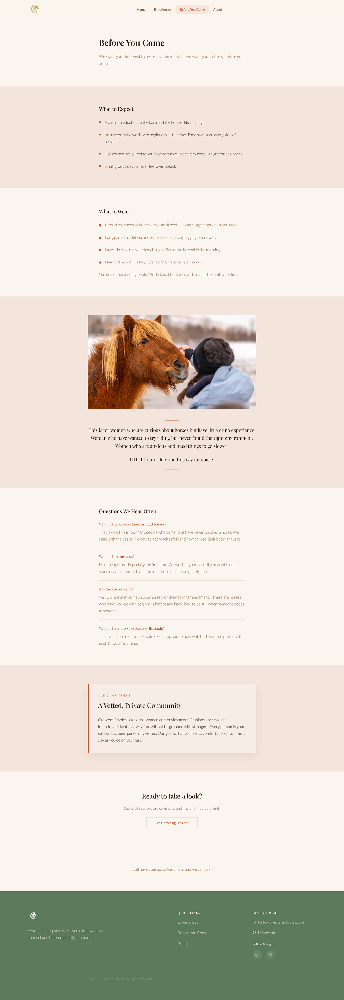
About. Contact moved here from the main nav. It appears at the end of the founder's story, when trust is highest and the decision to reach out feels natural.
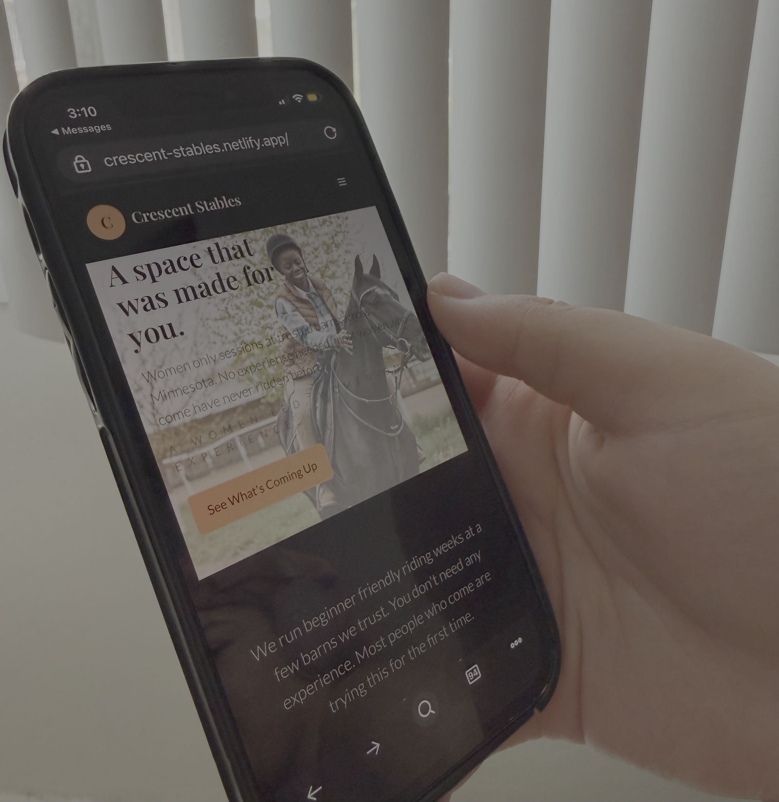
Reflection
Version 1 was not a failure. It was the foundation.
It solved hierarchy, architecture, and reassurance structure. Version 2 deepened emotional precision. The difference between them is not aesthetics. It is judgment. Knowing when your first solution is correct but incomplete, and having the discipline to revisit your own work.
Inclusion design doesn't start with a policy. It starts with a photograph.
Every visual decision either opens a door or closes one. The palette, the photography, the page names. All of it is either welcoming someone or telling them this space isn't for them.
Structure is a form of empathy.
Organizing a site around how a nervous beginner thinks, not how a barn operates, is the difference between a site that builds trust and one that overwhelms.
Shipping changes how you design.
Working through real deployment sharpened every decision. When you know the consequences are real, you get more precise, not less creative.
Why this matters beyond equestrian The same design problem shows up everywhere: how do you make someone who has never done this before feel like this space was built specifically for them? First-time business owners. First-time riders. First-time users of anything unfamiliar. The anxiety is the same. The design response should be too. That question is one I want to keep answering.